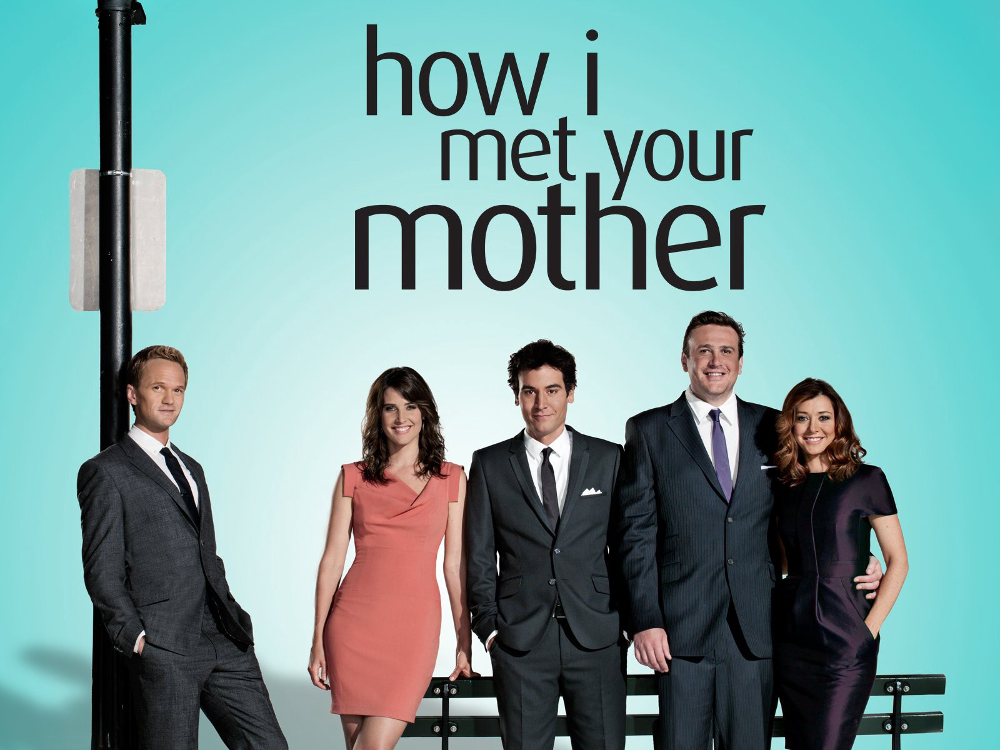
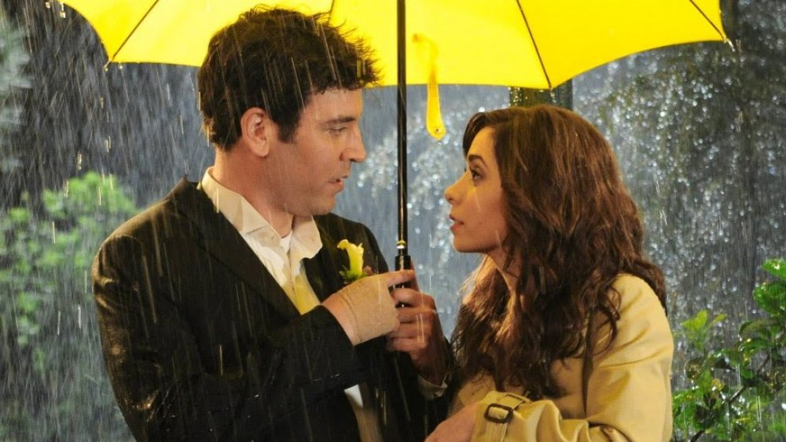
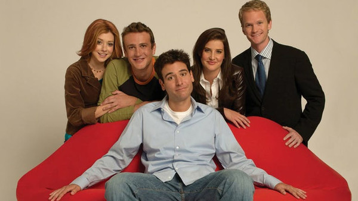

What is How I Met Your Mother?
How I Met Your Mother (often abbreviated as HIMYM) is an American sitcom created by Craig Thomas and Carter Bays for CBS. The series, which ran from 2005 to 2014, follows the main character, Ted Mosby, and his group of friends in New York City's Manhattan. As a framing device, Ted, in the year 2030, recounts to his son and daughter the events that led him to meet their mother. How I Met Your Mother is a joint production by Bays & Thomas Productions and 20th Century Fox Television and syndicated by 20th Television.
The series was loosely inspired by Thomas and Bays' friendship when they both lived in New York City. Among the 208 episodes, there were only four directors: Pamela Fryman (196 episodes), Rob Greenberg (7 episodes), Michael Shea (4 episodes), and Neil Patrick Harris (1 episode). Known for its unique structure, humor, and incorporation of dramatic elements, How I Met Your Mother was popular throughout its run. The show initially received positive reviews, while the later seasons received more mixed reviews. The show was nominated for 30 Emmy Awards and won ten. In 2010, Alyson Hannigan won the People's Choice Award for Favorite TV Comedy Actress. In 2012, seven years after its premiere, the series won the People's Choice Award for Favorite Network TV Comedy, and Neil Patrick Harris won the award for Favorite TV Comedy Actor.
Premise
The series follows the adventures of Ted Mosby (played by Josh Radnor), who narrates the story of how he met the mother of his children. The story goes into a flashback and starts in 2005 with the 27-year-old Ted Mosby living in New York City and working as an architect. The narrative deals primarily with his best friends, including the long-lasting couple Marshall Eriksen (Jason Segel) and Lily Aldrin (Alyson Hannigan), womanizing playboy Barney Stinson (Neil Patrick Harris), and Canadian news reporter Robin Scherbatsky (Cobie Smulders); all of the characters' lives are entwined. The series explores many storylines, including a "will they or won't they" relationship between Robin and each of the two single male friends, Marshall and Lily's relationship, and the ups and downs of the characters' careers.
The show's frame story depicts Ted (voice of Bob Saget, uncredited) verbally retelling the story to his son Luke (David Henrie) and daughter Penny (Lyndsy Fonseca) as they sit on the couch in the year 2030. This future-set frame is officially the show's "present day", and How I Met Your Mother exploits this framing device in numerous ways: to depict and re-depict events from multiple points of view; to set up jokes using quick and sometimes multiple flashbacks nested within the oral retelling; to substitute visual, verbal, or aural euphemisms for activities Ted does not want to talk about with his children (sexual practices, use of illicit substances, vulgar language, etc.); and even to add some elements of humor: in the episode "How I Met Everyone Else", Ted describes his dates with a girlfriend whose name he has forgotten, leading all characters to act as though her given name were "Blah-Blah"; later in the series, Ted remembers her name is Carol.
While the traditional love story structure begins when the romantic leads first encounter each other, How I Met Your Mother does not introduce Ted's wife (Cristin Milioti) until the eighth-season finale and only announces her name (Tracy McConnell) during the series finale. The show instead focuses on Ted's prior relationships and his dissatisfaction with those women, thus setting the stage for his eventual happiness with Tracy. Finally in present 2030, six years after Tracy's death, Ted gets back with Robin, which viewers may have assumed at the series finale when Ted is standing outside Robin's window. Ted's children were the ones to realize first that Ted was still in love with Robin, through the stories he told.
Cast and Characters
Josh Radnor as Ted Mosby, an architect, college professor and the central character of the series. He is the main protagonist since he tells the story of his adult years from his late twenties to his early thirties and about all the obstacles he has to overcome before he meets "The One" aka the Mother. This story is told by the Older Ted Mosby, and narrator of the series, Bob Saget. Ted moved to New York City with his friends Marshall and Lily after graduating from Wesleyan University. In New York, he met Barney at the urinal of MacLaren's and Robin, to whom he was immediately attracted. Ted is on a quest for happiness and "The One", the woman he will marry. Ted experiences many relationships, one of them being Robin, that reveal the qualities he wants in his future wife. At the end of each relationship Ted, with levity, reflects upon what went wrong. Although hope to find the one diminishes with each failed relationship, Ted does not give up. Ted prefers more elegant and high-class interests than his friends have. He goes to great lengths to profess his love to the women in his life, but they all falter eventually. Despite these qualities, Ted often acts immaturely, such as partaking in wild activities with Barney. In the show's finale, he says, that, in Tracy, he had met the love of his life (the titular Mother), but only after he was finished telling the story he realized that Robin was the love of his life.
Jason Segel as Marshall Eriksen, Ted Mosby's best friend. Marshall and Ted are assigned to be roommates at Wesleyan University, and remained living together when they move to New York City. In season 2 Marshall marries Lily, with whom he has been in love since his freshman year of college; they have a child during season 7. Marshall was born in St. Cloud, Minnesota, where his family and culture are the foundation to major conflicts he faces in the series. He has an interest in the paranormal phenomenon, and mythical creatures, particularly Sasquatch. His dream to be an environmental lawyer, conflicts with his immediate need for money, such as for his wedding and to raise his children.
Cobie Smulders as Robin Scherbatsky, a news anchor who is trying to make it as a journalist and dates both Ted and Barney. Robin emigrated from Canada to take a job in a news station and met Ted at MacLaren's; her Canadian background is a source of many jokes from her friends, for instance, ‘Robin Sparkles’. She is shown to be very career-centric and rejects traditional roles, such as getting married and having kids. Robin often drinks scotch and smokes cigars, and she is an avid gun fan. She and Barney get engaged and later marry in the first part of the series finale, but divorce in the second part, three years later. Smulders' husband Taran Killam appeared in six episodes as Gary Blauman.
Neil Patrick Harris as Barney Stinson is a serial playboy, using his relative wealth and an array of outrageous strategies to seduce women with no intention of engaging in a relationship. His catchphrases include 'Suit Up' and 'Legend-wait-for-it-Dary'. He is Ted's other best friend. Abandoned by his father at a young age, Barney has abandonment issues and clings to his friends. Barney tells his friends extravagant lies about events in his life as a defence mechanism for his substandard childhood. He marries Robin in the series finale but they divorce after three years. In 2020, a failed one-night stand gives him a daughter, Ellie. Harris' husband David Burtka has appeared in seven episodes as Scooter.
Alyson Hannigan as Lily Aldrin, a kindergarten teacher, an aspiring artist, and Marshall's wife. She is terrible at keeping secrets and can be manipulative at times. She marries Marshall in season 2 and gives birth to Marvin in season 7. Though appearing sweet and cute, Lily can be quite unexpectedly fierce. Lily Aldrin's best girl friend is Robin Scherbatsky, who she met through Ted as he dated Robin. Hannigan's husband Alexis Denisof appeared in ten episodes as Sandy Rivers.